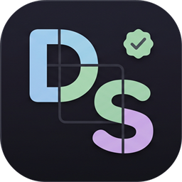

Daily Sync
A small Chrome extension that keeps track of which daily puzzles you've finished today. It ticks them off on its own as you play, and resets at midnight.
- Wordle
- Connections
- Strands
- The Mini
- Globle
- Worldle
- Krillion
- Automatic: it notices when you finish a puzzle, so there's nothing to click.
- One glance: the toolbar badge shows how many games are left today.
- Friends (optional): sign in with Google, add friends by code or email, and see who's finished what today.
Privacy in one paragraph
Game tracking happens entirely in your browser. Nothing leaves your computer unless you sign in to use Friends. If you do, we store your Google name, email, profile photo, friend code, friend list and which games you finished each day, so that friends you've added can see it. You can delete all of it from the extension at any time. Read the full privacy policy.
Not affiliated
Daily Sync is an independent project. It is not affiliated with, endorsed by or sponsored by The New York Times, Globle, Worldle (teuteuf) or Krillion. Game names are trademarks of their respective owners and are used only to identify the games this extension tracks.